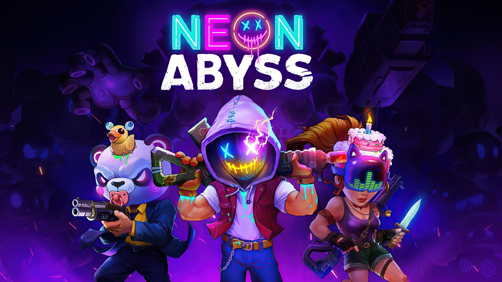
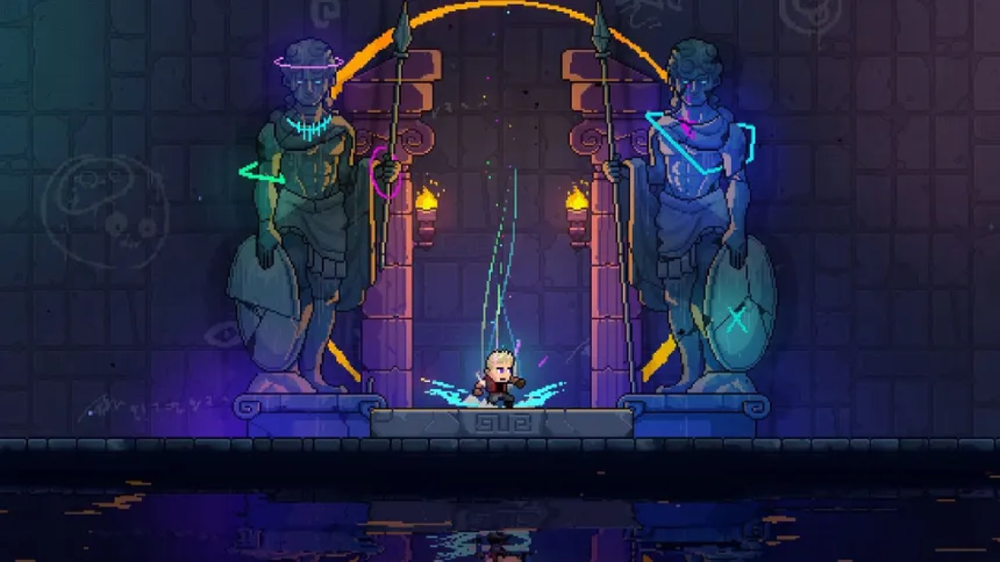
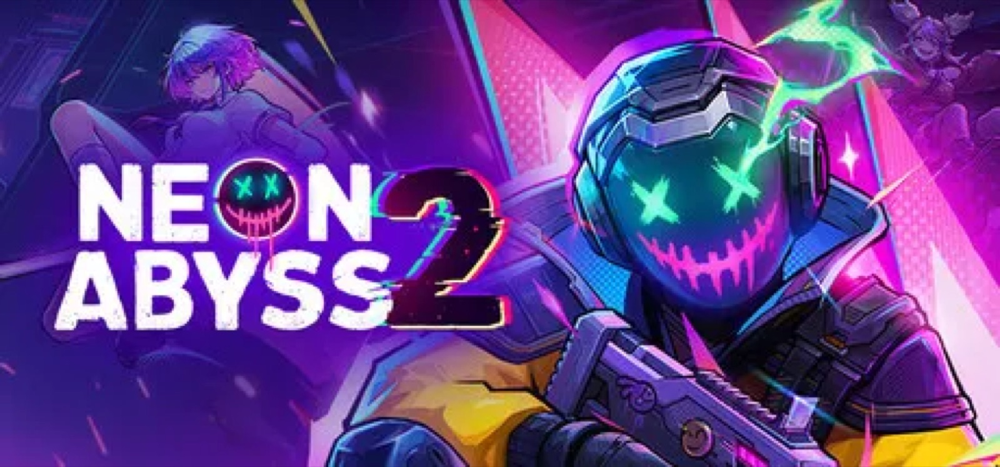

28 de septiembre de 2026 - Por modem
Nuevo tráiler de Neon Abyss: Echoes
Ya puedes descubrir el nuevo tráiler de Neon Abyss: Echoes. Un adelanto de las nuevas zonas, desafíos y sorpresas que te esperan en esta nueva aventura.
Leer más
28 de septiembre de 2026 - Por modem
Ya puedes descubrir el nuevo tráiler de Neon Abyss: Echoes. Un adelanto de las nuevas zonas, desafíos y sorpresas que te esperan en esta nueva aventura.
Leer más
14 de septiembre de 2026 - Por modem
En este nuevo diario de desarrollo os mostramos cómo damos vida al mundo de nuestro juego. Desde los primeros bocetos hasta el diseño de escenarios, cada detalle ayuda a construir nuestra aventura.
Leer más
2 de septiembre de 2026 - Por modem
Este año estaremos en IndieDev Day compartiendo nuestro proyecto y conociendo a otros desarrolladores. Será una gran oportunidad para mostrar nuestro trabajo, hablar con la comunidad y descubrir nuevas ideas del mundo indie.
Leer más
18 de agosto de 2026 - Por modem
Después de meses de ideas y prototipos, comenzamos oficialmente el desarrollo de nuestro nuevo proyecto. Todavía no podemos contaros mucho, pero pronto compartiremos las primeras novedades.
Leer más